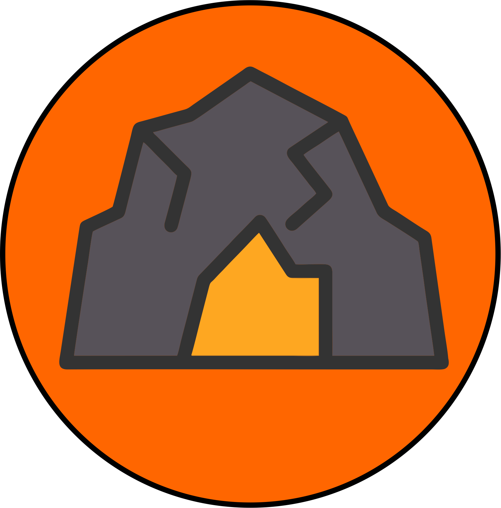
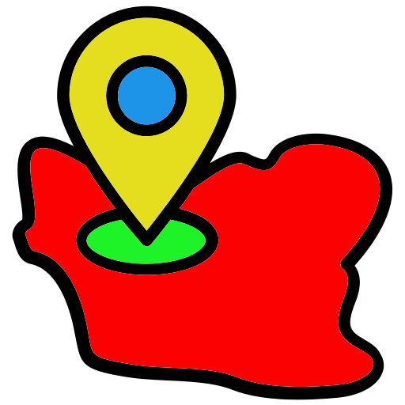

<!DOCTYPE html>
<html lang="en">

<head>
  <meta charset="UTF-8" />
  <meta http-equiv="X-UA-Compatible" content="IE=edge" />
  <meta name="viewport" content="width=device-width, initial-scale=1.0" />
  <title>Sebaran Gua Nusantara</title>
  <link rel="stylesheet" href="https://unpkg.com/leaflet@1.7.1/dist/leaflet.css"
    integrity="sha512-xodZBNTC5n17Xt2atTPuE1HxjVMSvLVW9ocqUKLsCC5CXdbqCmblAshOMAS6/keqq/sMZMZ19scR4PsZChSR7A=="
    crossorigin="" />
  <link rel="stylesheet" href="L.Icon.Pulse.css" />
  <link rel="stylesheet"
    href="https://cdn.jsdelivr.net/npm/leaflet.locatecontrol@0.76.0/dist/L.Control.Locate.min.css" />
  <link rel="stylesheet" href="https://ppete2.github.io/Leaflet.PolylineMeasure/Leaflet.PolylineMeasure.css" />
  <link rel="leaflet.defaultextent.css" />
  <title>L.switchBasemap</title>
  <link rel="stylesheet" href="https://cdnjs.cloudflare.com/ajax/libs/leaflet/1.7.1/leaflet.css"
    integrity="sha512-xodZBNTC5n17Xt2atTPuE1HxjVMSvLVW9ocqUKLsCC5CXdbqCmblAshOMAS6/keqq/sMZMZ19scR4PsZChSR7A=="
    crossorigin="anonymous" referrerpolicy="no-referrer" />
  <link href="style.eb127ecea7b7559c70ac.css" rel="stylesheet">


  <title>Webgis Djakarta Caver</title>
  <style>
    html,
    body,
    #map {
      height: 100%;
      width: 100%;
      margin: 0px;
    }

    .titik {
      margin-left: 0px;
      margin-top: 0px;
      padding-right: 2px;
      padding-bottom: 4px;
      object-position: center;
      vertical-align: middle;
    }

    .kotak {
      margin-left: 0px;
      margin-top: 0px;
      padding-right: 2px;
      padding-bottom: 4px;
      object-position: center;
      vertical-align: middle;
    }

    .leaflet-control-defaultextent {
      background-image: url('leaflet.defaultextent@2X.png');
      background-size: contain;
      background-repeat: no-repeat;
      background-position: center center;
      width: 26px;
      height: 26px;
    }

    
  </style>
</head>

<body>

  
  <!-- <div class="logo">
    
  </div> -->
  <div id="map"></div>


  <script src="https://unpkg.com/leaflet@1.7.1/dist/leaflet.js"></script>
  <script src="https://cdnjs.cloudflare.com/ajax/libs/jquery/3.6.0/jquery.js"></script>
  <script src="L.Icon.Pulse.js"></script>
  <script src="https://ppete2.github.io/Leaflet.PolylineMeasure/Leaflet.PolylineMeasure.js"></script>
  <script src="leaflet.defaultextent.js"></script>


  <!-- Geolocation -->

  <script src="https://cdn.jsdelivr.net/npm/leaflet.locatecontrol@0.76.0/dist/L.Control.Locate.min.js"
    charset="utf-8"></script>

  <script>
    // Menset leaflet didalam id 'map'
    var map = L.map('map').setView([-2.548926, 118.014863], 5);


    L.tileLayer('https://{s}.tile.openstreetmap.org/{z}/{x}/{y}.png', {
      maxZoom: 18,
      attribution: 'Map data © <a href="https://www.djakartacaver.org/">Djakarta Caver</a> contributors'
    }).addTo(map);


    // Buat fungsi untuk menyesuaikan ukuran peta saat ukuran halaman berubah
    function resizeMap() {
      var mapContainer = document.getElementById('map');
      mapContainer.style.width = window.innerWidth + 'px';
      mapContainer.style.height = window.innerHeight + 'px';
      map.invalidateSize();
    }

    // Panggil fungsi resizeMap() saat halaman dimuat atau ukuran jendela browser berubah
    window.addEventListener('resize', resizeMap);
    window.addEventListener('DOMContentLoaded', resizeMap);


    let options = {
      position: "topleft", // Position to show the control. Values: 'topright', 'topleft', 'bottomright', 'bottomleft'
      unit: "kilometres", // Default unit the distances are displayed in. Values: 'kilometres', 'landmiles', 'nauticalmiles'
      useSubunits: true, // Use subunits (metres/feet) in tooltips if distances are less than 1 kilometre/landmile
      clearMeasurementsOnStop: true, // Clear all measurements when Measure Control is switched off
      showBearings: true, // Whether bearings are displayed within the tooltips
      bearingTextIn: "In", // language dependend label for inbound bearings
      bearingTextOut: "Out", // language dependend label for outbound bearings
      tooltipTextFinish: "Click to <b>finish line</b><br>",
      tooltipTextDelete: "Press SHIFT-key and click to <b>delete point</b>",
      tooltipTextMove: "Click and drag to <b>move point</b><br>",
      tooltipTextResume: "<br>Press CTRL-key and click to <b>resume line</b>",
      tooltipTextAdd: "Press CTRL-key and click to <b>add point</b>",
      // language dependend labels for point's tooltips
      measureControlTitleOn: "Turn on PolylineMeasure", // Title for the Measure Control going to be switched on
      measureControlTitleOff: "Turn off PolylineMeasure", // Title for the Measure Control going to be switched off
      measureControlLabel: "&#8614;", // Label of the Measure Control (Unicode symbols are possible)
      measureControlClasses: [], // Classes to apply to the Measure Control
      showClearControl: true, // Show a control to clear all the measurements
      clearControlTitle: "Clear Measurements", // Title text to show on the Clear Control
      clearControlLabel: "&times", // Label of the Clear Control (Unicode symbols are possible)
      clearControlClasses: [], // Classes to apply to Clear Control
      showUnitControl: true, // Show a control to change the units of measurements
      unitControlUnits: ["kilometres", "landmiles", "nauticalmiles"],
      // measurement units being cycled through by using the Unit Control
      unitControlTitle: {
        // Title texts to show on the Unit Control
        text: "Change Units",
        kilometres: "kilometres",
        landmiles: "land miles",
        nauticalmiles: "nautical miles",
      },
      unitControlLabel: {
        // Unit symbols to show in the Unit Control and measurement labels
        metres: "m",
        kilometres: "km",
        feet: "ft",
        landmiles: "mi",
        nauticalmiles: "nm",
      },
      unitControlClasses: [], // Classes to apply to the Unit Control
      tempLine: {
        // Styling settings for the temporary dashed line
        color: "#00f", // Dashed line color
        weight: 2, // Dashed line weight
      },
      fixedLine: {
        // Styling for the solid line
        color: "red", // Solid line color
        weight: 2, // Solid line weight
      },
      startCircle: {
        // Style settings for circle marker indicating the starting point of the polyline
        color: "#000", // Color of the border of the circle
        weight: 1, // Weight of the circle
        fillColor: "#0f0", // Fill color of the circle
        fillOpacity: 1, // Fill opacity of the circle
        radius: 3, // Radius of the circle
      },
      intermedCircle: {
        // Style settings for all circle markers between startCircle and endCircle
        color: "#000", // Color of the border of the circle
        weight: 1, // Weight of the circle
        fillColor: "#ff0", // Fill color of the circle
        fillOpacity: 1, // Fill opacity of the circle
        radius: 3, // Radius of the circle
      },
      currentCircle: {
        // Style settings for circle marker indicating the latest point of the polyline during drawing a line
        color: "#000", // Color of the border of the circle
        weight: 1, // Weight of the circle
        fillColor: "#f0f", // Fill color of the circle
        fillOpacity: 1, // Fill opacity of the circle
        radius: 3, // Radius of the circle
      },
      endCircle: {
        // Style settings for circle marker indicating the last point of the polyline
        color: "#000", // Color of the border of the circle
        weight: 1, // Weight of the circle
        fillColor: "#f00", // Fill color of the circle
        fillOpacity: 1, // Fill opacity of the circle
        radius: 3, // Radius of the circle
      },
    };
    let polylineMeasure = L.control.polylineMeasure(options);
    polylineMeasure.addTo(map);

    // menset BaseMap kedalam leaflet
    L.tileLayer(
      "https://api.mapbox.com/styles/v1/{id}/tiles/{z}/{x}/{y}?access_token=pk.eyJ1IjoibWFwYm94IiwiYSI6ImNpejY4NXVycTA2emYycXBndHRqcmZ3N3gifQ.rJcFIG214AriISLbB6B5aw",
      {
        maxZoom: 18,
        // attribution: 'Map data © <a href="https://www.openstreetmap.org/copyright">OpenStreetMap</a> contributors, ' +
        // 'Imagery © <a href="https://www.mapbox.com/">Mapbox</a>',
        id: "mapbox/streets-v11",
        tileSize: 512,
        zoomOffset: -1,
      }
    ).addTo(map);

    //mengaktifkan basemaps ke dalam leaflet

    var googleStreets = L.tileLayer(
      "http://{s}.google.com/vt/lyrs=m&x={x}&y={y}&z={z}",
      {
        maxZoom: 20,
        subdomains: ["mt0", "mt1", "mt2", "mt3"],
      }
    );
    var googleHybrid = L.tileLayer(
      "http://{s}.google.com/vt/lyrs=s,h&x={x}&y={y}&z={z}",
      {
        maxZoom: 20,
        subdomains: ["mt0", "mt1", "mt2", "mt3"],
      }
    );
    var googleSat = L.tileLayer(
      "http://{s}.google.com/vt/lyrs=s&x={x}&y={y}&z={z}",
      {
        maxZoom: 20,
        subdomains: ["mt0", "mt1", "mt2", "mt3"],
      }
    );
    var googleTerrain = L.tileLayer(
      "http://{s}.google.com/vt/lyrs=p&x={x}&y={y}&z={z}",
      {
        maxZoom: 20,
        subdomains: ["mt0", "mt1", "mt2", "mt3"],
      }
    );
    var openTopoMap = L.tileLayer('https://{s}.tile.opentopomap.org/{z}/{x}/{y}.png', {
      maxZoom: 20,

    });


    // polygon GeoJSON Polygon
    var admin_desa = L.geoJson(null, {
      style: function (feature) {
        return {
          color: "red", //memberikan warna garis luar polygon
          weight: 1, // ketebalan garis luar
          opacity: 0.9, // transparansi garis luar
          fillColor: "red", //warna fill
          fillOpacity: 0.7, // transparansi fill
        };
      },
      onEachFeature: function (feature, layer) {
        layer.on({
          mouseover: function (e) {
            var layer = e.target;
            layer.setStyle({
              weight: 2, //ketebalan garis saat mouse diatas feature
              color: "cyan", //warna garis saat mouse diatas feature
              opacity: 1, //trasparansi garis saat mouse diatas feature
              fillColor: "blue", //warna tengah saat mouse diatas feature
              fillOpacity: 0.5, //trasparansi warna tengah saat mouse diatas feature
            });
            layer.bringToFront();
          },
          mouseout: function (e) {
            admin_desa.resetStyle(e.target);
            map.closePopup();
          },
        });
      },
    }).bindPopup(function (layer) {
      // popup Kawasan Gamping
      return (
  "<table style='border-collapse: collapse;'>"+
    "<tr style='background-color: #B0C4DE;'>"+
      "<td style='padding: 5px; border: 1px solid #ddd;'>Nama Kawasan</td>"+
      "<td style='padding: 5px; border: 1px solid #ddd;'>"+layer.feature.properties.FORMASI_SA+"</td>"+
    "</tr>"+
    "<tr style='background-color: #E6E6FA;'>"+
      "<td style='padding: 5px; border: 1px solid #ddd;'>Litologi</td>"+
      "<td style='padding: 5px; border: 1px solid #ddd;'>"+layer.feature.properties.LITOLOGI+"</td>"+
    "</tr>"+
  "</table>"
);
    });

    // memanggil data GeoJSON kedalam layer
    $.getJSON("gampinggabung.geojson", function (data) {
      admin_desa.addData(data); //mengaktifkan kedalam layer INGATTT
    });

    // GEOJSON POINT GUA
    var pulsing = L.icon.pulse({
      iconSize: [25, 25],
      color: "red",
      fillColor: "red",
      heartbeat: 1,
    });

    var gua_pt = L.geoJson(null, {
      pointToLayer: function (feature, latlng) {
        return L.marker(latlng, {
          icon: pulsing,
        });
      },
    });

    var Icon = L.icon({
      iconUrl: "img/gua.png",
      iconSize: [25, 25],
      className: "pulsing-icon",
    });

    var icon_gua = L.geoJson(null, {
      pointToLayer: function (feature, latlng) {
        return L.marker(latlng, {
          icon: Icon,
        });
      },
    }).bindPopup(function (layer) {
      // popup OLT
      // console.log(layer.feature);
      return (
        `<table style="border-collapse: collapse; margin: 15px auto;">
    <tr style="border: 1px solid grey; background-color: #D6EAF8;">
      <td style="border: 1px solid grey; padding: 10px; font-weight: bold; color: #154360;">Nama Gua</td>
      <td style="border: 1px solid grey; padding: 10px; color: #000;">${layer.feature.properties.Nama_Gua}</td>
    </tr>
    <tr style="border: 1px solid grey; background-color: #FFFFFF;">
      <td style="border: 1px solid grey; padding: 10px; font-weight: bold; color: #154360;">Latitude</td>
      <td style="border: 1px solid grey; padding: 10px; color: #000;">${layer.feature.properties.Latitude}</td>
    </tr>
    <tr style="border: 1px solid grey; background-color: #D6EAF8;">
      <td style="border: 1px solid grey; padding: 10px; font-weight: bold; color: #154360;">Longitude</td>
      <td style="border: 1px solid grey; padding: 10px; color: #000;">${layer.feature.properties.Longitude}</td>
    </tr>
    <tr>
      <td colspan="2"></td>
    </tr>
    <tr>
      <td colspan="2" style="text-align:center; padding-top: 10px;">
        <a target="_blank" href="https://www.google.com/maps/dir/?api=1&destination=${layer.feature.geometry.coordinates[1]},${layer.feature.geometry.coordinates[0]}&travelmode=driving">
          <span style="background-color: #007bff; color: #fff; font-size: 13px; padding: 8px 8px; border-radius: 4px; text-decoration: none;">Menuju Lokasi</span>
        </a>
      </td>
    </tr>
  </table>`
      );
    });

    /* 	MEMANGGIL DATA GEOJSON POINT */
    $.getJSON("gua.geojson", function (data) {
      gua_pt.addData(data);
      icon_gua.addData(data);
      map.addLayer(gua_pt); //gua_pt ditampilkan ketika halaman dipanggil
      map.addLayer(icon_gua);
    });

    map.on("overlayadd", (evenhandler) => {
      if (
        evenhandler.name

      ) {
        map.addLayer(icon_gua)
        console.log(evenhandler.name == 4)
      }
    });

    map.on("overlayremove", (evenhandler) => {
      if (
        evenhandler.name

      ) {
        map.removeLayer(icon_gua)
        console.log(evenhandler.name == 4)
      }
    });

    // Menambahkan kontrol default extent
    var resetControl = L.control.defaultExtent({
      position: 'topleft',
      maxWidth: 100,
      maxHeight: 100,
      backgroundColor: 'white',
      borderColor: '#ccc',
      borderWeight: 1,
      text: '',
      title: 'Set View'
    });

    resetControl.addTo(map);


    // memasukkan variable basemapsnya
    var baseLayers = {
      "Google Hybrid": googleHybrid,
      "Google Satelite": googleSat,
      "Google Terrain": googleTerrain,
      "Google Street": googleStreets,
      "Topo Map": openTopoMap
    };

    // memasukkan variable layer
    var overlays = {
      " Mulut Gua":
        gua_pt,

      " Kawasan Gamping":
        admin_desa,
    };


    L.control
      .locate({
        locateOptions: {
          enableHighAccuracy: true,
        },
      })
      .addTo(map);

    L.control
      .layers(baseLayers, overlays, {
        collapsed: true,
        position: "topleft",
      })
      .addTo(map); //mengaktifkan control layer ke map
    map.attributionControl.setPrefix(false);

    
    
  </script>
</body>

</html>